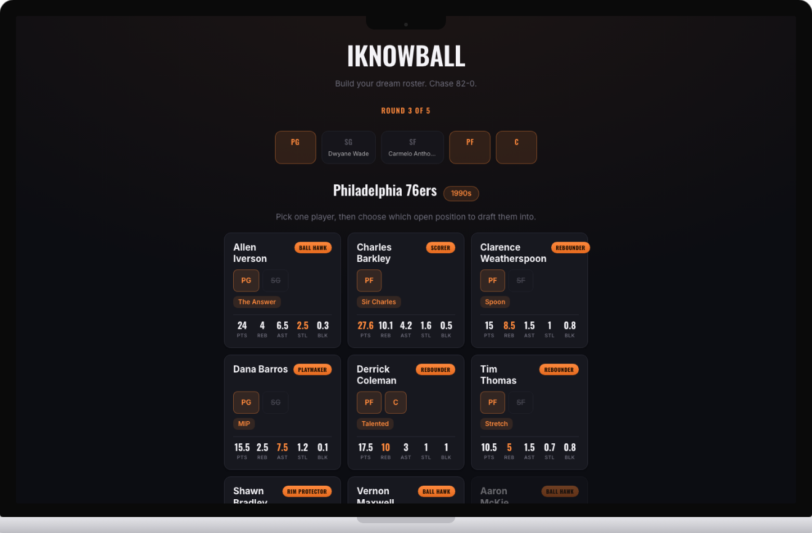
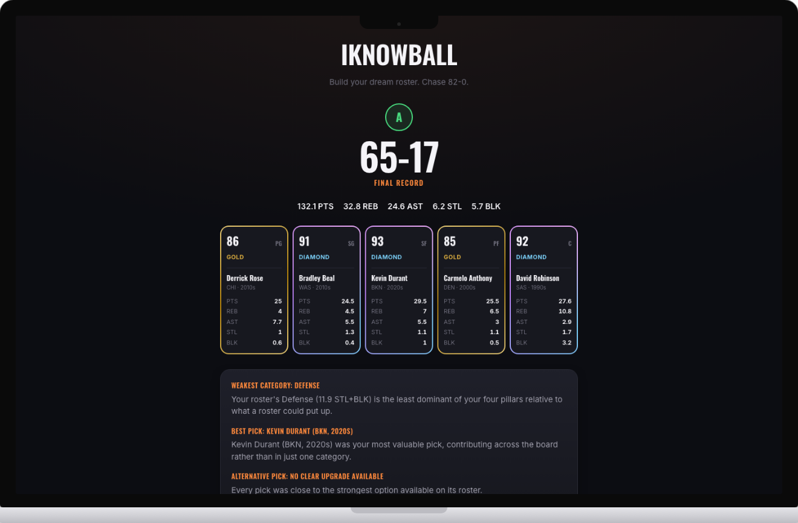

Sports · Web Game · Solo Build
I kept getting the same handful of teams and eras every time I played 82-0.com, so I built and shipped my own version instead. This is what happened after real players got their hands on it: four in-depth interviews, a 20-person playtest with basketball enthusiasts, and a running data-accuracy audit that turned into 15 real (and counting), shipped rounds of improvement.
Overview
I've always enjoyed draft-and-guess basketball games, the kind where you pull a random real team and see how far you can take it. 82-0.com is the one I kept coming back to, until I noticed the same handful of teams and eras kept showing up over and over, undermining the entire premise of a "random draft" game. So I built my own version and shipped it: iknowball (a play on the modern term), a web game where players draft a 5-man NBA roster one position at a time, pulling from randomly rolled real teams across six decades, then get scored on how that roster would actually perform across an 82-game season.
That founding complaint has now come back around twice. The first time, it turned out iknowball had quietly reintroduced the exact repetition problem it was built to fix: teams rotated correctly across games, but decades didn't. The second time, it came from an entirely new, much larger source: a 20-person playtest run by a hoop group who actually know the fantasy-draft genre. They found a narrower version of the same bug, the same team landing on the same decade again almost immediately, even after the first fix had already shipped.
This update folds that 20-person round into the original research, and adds everything shipped since: a full rating-accuracy audit (fixing the "decade dilution" pattern this document's earlier draft hadn't yet named), a deliberate one-off rating override, a full restructure of the tier-rating scale, and the second, deeper fix to team/decade repetition. Everything below is organized the way the work actually happened: research first, then cross-cutting findings, then a section-by-section account of what shipped, reverted, or is still on the roadmap, with the real numbers behind each call.
Research
Two rounds: four unmoderated deep-dive sessions spanning basketball knowledge levels, then a 20-person structured playtest with people who actually play fantasy-style basketball games for fun.
Picks by stats and nicknames since she can't evaluate players on reputation. First to flag that stats were hard to see, and that the "draft this team" click felt repetitive round after round.
Got visibly stuck. Couldn't tell the team roll was interactive, and didn't realize there was randomization happening until his second spin. The most detailed source on what the interface fails to communicate.
Evaluated players by role and position need, not just stats, and didn't even notice stats were on the cards at first. Most invested in the scoring model actually making sense.
Came back after the first wave of fixes shipped. Focused almost entirely on the scoring model's realism and the team/decade repetition, the founding complaint reappearing independently.
A structured playtest run by Kevin with a group of ~20 people who actively play fantasy-basketball-style games, including 82-0 itself. This is the first round with real quantitative data instead of individual field notes, and the first time iknowball was tested head-to-head against the named competitor.
Asked why, unprompted, the ten who'd played 82-0 converged on the same four reasons:
Gameplay
Each round rolls a random real team from a random decade. You look at that team's actual roster, real stats and all, and pick one player to draft into one of your five open positions. Rosters span the 1970s through the 2020s, so a round might hand you 1990s Philadelphia (Iverson, Barkley) just as easily as a modern team most players already recognize.

Round 3 of 5: real per-season stats, drafted one position at a time.
Key Screen
Once all five positions are filled, your roster gets simulated across an 82-game season and graded. This is the screen playtesters responded to the most: every card shows a real rarity tier (Silver, Gold, Diamond) computed from real career stats, and the breakdown below it explains, in plain language, your weakest category and your single best pick, not just a final number with no reasoning behind it.

A finished roster: Derrick Rose, Bradley Beal, Kevin Durant, Carmelo Anthony, David Robinson. 65-17, grade A.
Validation
The 20-person playtest was the first time I got real, quantified data instead of individual impressions. Everyone who'd played the competitor before was asked directly which game they preferred, and why.
Asked why, unprompted, they converged on the same four reasons: the explanation of why the score came out the way it did, cards visibly divided by tier instead of one flat list, real variety in the teams themselves, and a mix of eras that still felt current.
"The problem is the decade dilution."
That's a direct quote, given independently by more than one playtester, about a pattern I later confirmed and fixed: several real stars were rated far below what their actual careers earned, because their in-game stat line was an average across an entire decade instead of their real peak season. I corrected roughly 37 individual player ratings across two audit passes, each checked against real per-season stats, and restructured the entire rating scale so Silver, Gold, and Diamond each get their own clean, non-overlapping range instead of one blurry shared curve.
Where It Stands
iknowball is a shipped, live product, not a prototype: 15 real changes have gone out based on two rounds of research, from a full rebuild of the roll animation to a from-scratch rating-accuracy audit across the whole player dataset. The next round is already scoped: a leaderboard, visible odds, and a 1v1 head-to-head mode, all requested directly by the same playtesters who validated the game against its competitor.
Takeaway
Anyone who plays 82-0 could tell you it repeats itself too much. The harder part was building an alternative good enough that ten different people, unprompted, said they'd rather play mine, then finding out my own fix had quietly reintroduced a narrower version of the exact bug I built the whole game to solve, and fixing that too.
A game you actually play is the best source of product instinct you'll ever have. I didn't need a research brief to know 82-0 was repetitive. I needed the discipline to build the fix, ship it, and keep listening once real people started playing it.